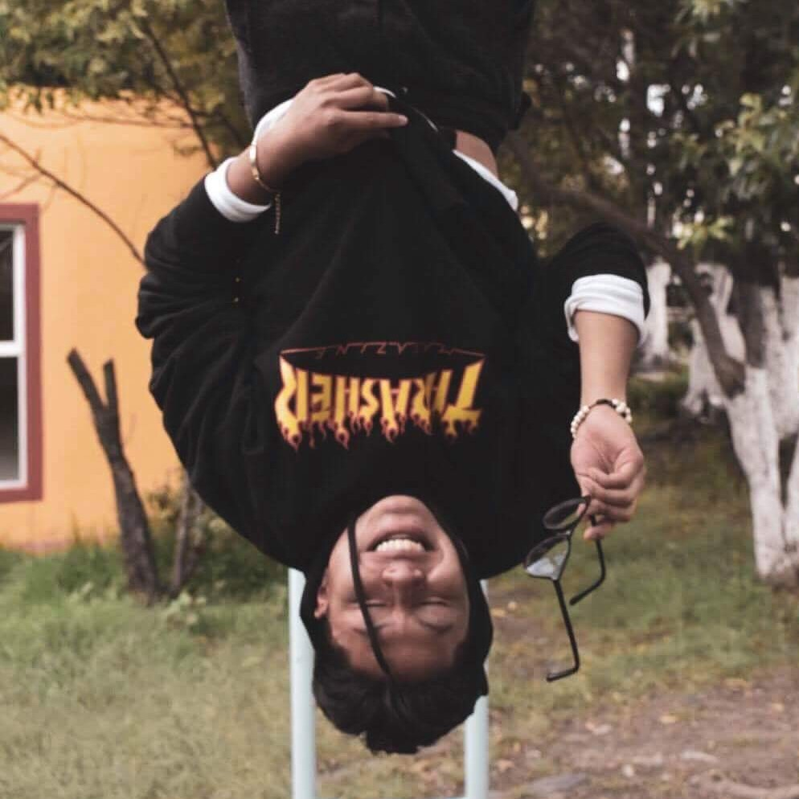

My name's
ROBERTO CARRICHI

ACERCA DE MI:
Soy un chico de 18 años con muchísimas ganas de crecer y aprender. En todo momento con las personas que más quiero y las pasiones que me hacen sentir vivo.
EL RESUMEN DE MI EXPERIENCIA LABORAL Y TOOODO ESO
Por el momento no tengo tanto por comentar como me gustaría, pues aún sigo en proceso de terminar mi carrera universitaria. Pero claro que he tenido buenas experiencias que contar. Si es lo que buscas, ya sabes donde hacer click.
¿QUIERES SABER MÁS DE MI?
La verdad es que siempre hay mucho más de una persona aparte de el ambiente académico o laboral en el que me he encontrado alguna vez. Si realmente quieres conocer quien es Roberto, ya sabes que hacer.
¿QUIERES CONTACTARME?
Si lo que ya has leído sobre mí te ha gustado y te interesaría ponerte en contacto conmigo, ¡este es tu momento para que lo hagas!